X-Mode Pattern Synchronization to Free Running Bit Streams
Hubert Werkmann, Verigy
Paper-ID: 123992 June 2006
Hardware Setup
For certain tests of advanced computation and communication devices it is necessary to supply data to a DUT from data sources which are not pattern synchronized to the analysis portion of the test system. One example for such a kind of devices are SerDes components which translate a high speed serial data stream into a lower speed parallel data stream with a certain data width and vice versa. Figure 1 shows an example setup for the Rx functional test of a SerDes device, where a circular high speed serial data stream is provided by a Bit Error Rate Tester (BERT) and the data comparison on the parallel side of the DUT is done by standard channels of a Verigy V93000 SOC test system.
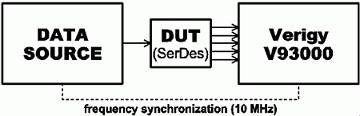
Figure (1) Hardware setup requiring synchronization to free running bit stream exemplified by Rx functional test for a SerDes device
Pattern synchronization in this case means that the compare pattern of the standard channels in the test system has to be aligned to the correct position in relation to the incoming data stream. The challenge with this setup is that the start of the stimulating pattern sequence cannot be controlled exactly by the test system controller and that there is an unknown data latency on the signal path from the data source through the DUT to the comparing channels. Thus, the first bit of the circularly sourced serial data stream arrives arbitrarily at the comparator of the test system's digital channel and the test system has to identify the actual bit position within the incoming data stream in order to be able to perform a stable functional test on this data stream. Moreover, this kind of devices not always support word alignment as shown in Figure 2 on the parallel side, but start supplying data on the parallel side of the DUT as soon as the position of single bits within the serial data stream is identified. This means that there is no identification of the word boundaries of the serial data stream within the DUT. Thus, the mapping of bit positions within a word of the serial data stream to the bit lines used on the parallel side of the DUT varies even for the same DUT, once the serial data stream is shut down and restarted as shown in Figure 3. This makes the pattern synchronization even more complicated, because the first bit of the serial data stream does occur not only arbitrarily in time on the parallel side of the DUT, but also on an arbitrary bit line of the DUT. Thus, if the DUT does not support word alignment, the synchronization challenge expands to two dimensions. The first dimension is the time in which a certain bit of the serial data stream appears on the parallel side of the DUT, the second is the bit line on which this bit appears at the parallel side of the DUT and thus, the tester channel which has to be used to check for the correctness of this bit.
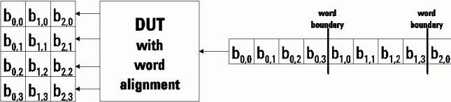
Figure (2) Reaction of DUT with word alignment on all pattern starts
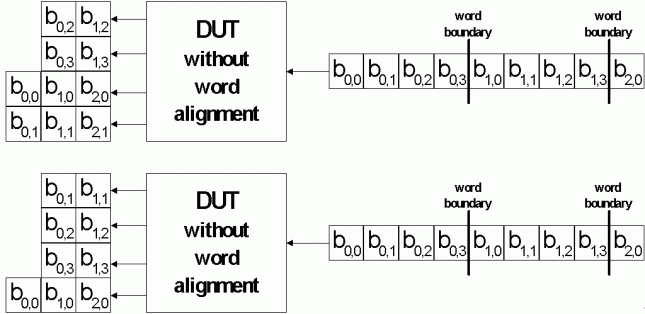
Figure (3) Reaction of DUT without word alignment on different pattern starts
On the Verigy V93000 SOC test system counted breakless matchloops can be used to efficiently do this pattern synchronization as they apply a controllable number of user defined vectors at full pattern speed in between the single executions of the matchloop body. Thus, the relative bit position relationship between the sourced data and the compare data is known for each execution of the matchloop body.
Counted Breakless Matchloop
The counted breakless match loop implementation avoids having break vectors in match loops. This makes it easier for the user as he does not have to worry about generating the correct number of break vectors for a particular application. This is sometimes a problem when testing certain devices such as those with PPL technology where you want to synchronize the device with the match loop. With the earlier match loop implementation this was difficult because the number of break vectors generated by the tester, in order to evaluate the results, was hard to predict.
For setting up a counted breakless matchloop, the user just has to program the sequencer with the MATCHACTIVATE and MATCHREPEAT instructions including the number of real vectors needed for the application. The software internally takes care of the time needed to evaluate the match condition. During this evaluation time, user defined vectors are applied repeatedly to the device rather than a non transparent number of break vectors as in the match loop implementation before SmarTest 3.0. The vector execution scheme used for the counted breakless match loop implementation is shown in Figure 4.
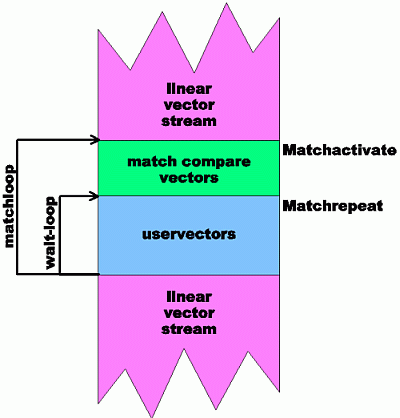
Figure (4) Vector execution scheme of breakless matchloop
As shown, the main match loop consists of a number of vectors that are used to generate a match compare (match compare vectors). The start of the match compare vectors is identified using the vector sequencer instruction MATCHACTIVATE. This instruction takes the maximum number of loop executions for the match compare vector part as parameter. If no functional pass for the match compare vectors is achieved within this number of loop executions, the vector label is left resulting in a functional fail of the whole label. The match compare vectors are followed by a user defined number of vectors (user vectors), which are repeated until the signal setting the error flag has been propagated through the testhead electronics. This error flag is used to generate a jump to the start of the match loop if the match compare vectors did not result in a functional pass. The start of the user vectors is identified using the vector sequencer instruction MATCHREPEAT. The number of user vectors to be repeated during the error signal propagation time is specified as parameter for this sequencer instruction. This 'wait loop' is repeated enough times to ensure that any compare error will have set the error flag. This is determined by the software, so you Do not know how many vectors have been used, only that it is a multiple of the number of vectors include in this loop.
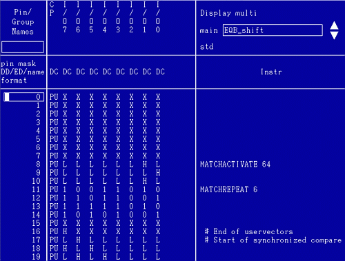
Figure (5) Vector setup for counted breakless matchloop
Restrictions on the use of match loop exist due to the manner in which vectors are accessed. The tester handles vectors in 8 vector blocks which means that the granularity of the match mode switch is 8 vectors. This means that you must ensure that the 7 vectors before the match start must not contain compare vectors. Likewise at the end of the match loop there may be up to 7 vectors whose results are included in the results of the following test. Therefore you have to ensure that these vectors will not cause any problems, for instance you can make these NOP vectors.
Problem Description
If a certain position in a circular bit stream has to be identified using a match loop implementation, usually a sliding compare window (in terms of device vector window over the bit stream) that is moved over this bit stream is used. One way to implement this sliding compare window is to use one device vector more than the bit stream contains in the vector area that is applied to check for the match condition. This additional vector normally is not considered in the match evaluation because its only purpose is to implement a phase shift of one serial bit between the bit stream start and the compare actions on the test system. Potential padding vectors in between two runs of the match comparison have to be an integer multiple of the bit stream length with this implementation in order to keep the phase shift at exactly one bit of the bit stream for consecutive executions of the match comparison. Thus, the start of the comparison for the match condition is advanced by one bit of the bit stream for each loop execution in the match loop.
The same methodology can be applied for devices which do a translation of the bit stream into data words consisting of more than one bit in combination with a deterministic alignment of these word boundaries to the bit stream bits. Even if the device does not do this word alignment, this methodology can be used if one bit-time of the bit stream is not shorter than the minimum time for a single tester cycle times the used data word width.
If this is not the case for a device without word alignment and the bit time of the circular bit stream is greater or equal to the minimum tester cycle time divided by the data word width of the DUT, an identification of the position within the bit stream can be implemented using several match loops of the type described above. The number of match loops in this case exactly corresponds to the data word width of the DUT, because each match loop tests for one bit stream to data word alignment position.
Problems however occur as soon as one bit time of the bit stream is less than the minimum tester cycle time divided by the number of bits per data word of the DUT. In this case X-modes have to be used which code several device vectors in one test system vector. Thus, the minimum number of device vectors that the sliding compare window can advance relative to the bit stream is not one anymore, but corresponds to the X-mode used. For X2-mode, which means that two device vectors are coded in one test system vector, the minimum device vector granularity is 2, for X3-mode this minimum granularity is 3 and for X4-mode 4. Accordingly, the additional vector in the match loop used before would result in shift of the compare window over the bit stream of 2,3 or 4 bit positions. Thus, in most cases a shift of one bit time between the bit stream and the test system vectors is only hard to achieve or even not achievable at all by adding additional vectors to the match compare vectors.
Instead of inserting an additional device vector to achieve the necessary displacement of one bit time between the bit stream and the device vectors, the approach proposed in this application note makes use of the fact that a displacement cannot only be achieved by mismatching the number of device vectors and the length of the bit stream by adding a device vector on the test system side, but also by reducing the length of the bit stream that is repeated circularly. A displacement implemented in this way can be matched exactly to the number of bittimes that is needed to implement a sliding window as shown in Figure 6 with a match loop independently of the X-mode used on the test system vector side.
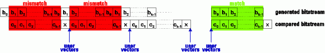
Figure (6) Proposed sliding compare window implementation
The table below gives an overview over all the possible cases which can occur when a device has to be aligned to a free running bit stream and shows how these cases can be addressed using match loop constructs.
|
Device supports word alignment |
Device does not support word alignment |
|---|---|---|
bit time ≥ minimum cycle time / word width |
Match loop with additional vectors |
Match loop with additional vectors |
minimum cycle time / word width > bit time ≥ minimum cycle time/word width |
Match loop with additional vectors |
Multiple matchloops with additional vectors covering all alignment positions |
bit time < minimum cycle time/word width |
X-mode setup; required displacement (granularity1)) is word width bit times |
X-mode setup; required displacement (granularity1)) is 1 bit time |
In the following the theory of this approach is explained and the requirements for its implementation are identified.
Theory
The process of data sourcing and data comparison can be interpreted as a modified producer consumer process at least to a certain extent. The data source continuously produces a certain amount of bits repeatedly and the test system consumes these bits by executing the vectors defined in a vector label. For SerDes components, the DUT acts as a buffer which stores the serially produced bits until a parallel word is complete. The difference to classical producer consumer processes in this case is that this buffer cannot be accessed asynchronously by the producer and consumer and thus, production and consumption have to be synchronous. This means that bits are produced at the same rate as they are consumed or putting it as requirement, the test system has to consume the bits by applying user defined vectors (vectors defined within a vector label) at the same rate as they are produced. If this is not the case, either the consumer runs out of data or the consumer misses some of the produced bits because there is no pool or storage of bits that are not consumed in time. If the consumer misses bits, the previous timing relation between producer and consumer is lost and may be changed once the consumer starts consuming bits again. Exactly this synchronized behavior of the producer consumer process is the reason why a counted breakless matchloop has to be used to adapt the position of the test system vectors (consumer) relative to the serial bit stream (producer). If a match loop with break vectors would be used, a not controllable number of break vectors would be applied for the time needed to evaluate the test result of the match compare vectors. Since break vectors are not defined in a vector label and thus, in our definition of the consumer process, are not consuming bits, the bits produced during this time would be missed and the timing relation between producer and consumer that was established during the previous production-consumption run is lost.
In the following theoretical considerations of the needed match loop construct, the formula characters below are used :
- k: number of bits in the serial bit stream that is repeated circularly
- x: X-mode used; number of device vectors per test system vector
- m: width of one DUT data word after the serial to parallel conversion of the bit stream
- d: displacement (in terms of produced bits) between the serial bit stream and the test system vectors for one execution of the match compare vectors
- g: required displacement granularity to cover all possible alignment relations between serial bit stream and match compare vectors
- Vm: number of match compare vectors
- Vu: number of user vectors for breakless match loop
- Vf: number of fill vectors after the breakless match loop
- Rm: minimum number of repeats for the match loop to cover all possible timing relations between free running bit stream and test system
- I, j, l: arbitrary integer numbers
Also two different views on the vectors, namely device vectors and test system vectors are used. The meaning of these two different views is as follows:
For x-mode setups, one tester vector executes x device vectors. Due to the fact that the bits of the serial data stream are spread over the m bits of one data word on the parallel side of the DUT, each device vector consumes m bits of the serial data stream. Taking the x-mode granularity into account, each test system vector consisting of x device vectors consumes x times m bits of the serial data stream.
Match compare vectors
In order to implement a relative displacement d between the serial data stream and the expected data on the test system for each execution of the match compare vectors, the circularly repeated pattern of the serial data stream must have a length k different from the number of bits consumed by the match compare vectors. If the sliding compare window is to be advanced in a positive direction over the circularly repeated bit stream, the number of serial bits the match compare vectors consume have to be greater than the number of serial bits that are circularly repeated. The difference between the number of bits the match compare vectors consume and the number of bits repeated circularly gives the number of bits the sliding compare window advances relative to the serial bit stream. The number of match compare vectors is kept at a minimum by applying only the number of test system vectors that are necessary to consume the number of bits produced for one run of the serial data stream plus the serial bit(s) needed to realize a displacement.
As stated already before, each test system vector consumes x times m bits of the serial bit stream. Thus, an integer multiple of x times m bits is consumed until the last test system vector of the match compare vector part is reached. The last one of the match compare vectors consumes the rest r of the k bits produced by the serial data stream since the start of the match compare vectors plus the d bits making up the relative displacement between the serially produced bits and the test system vectors. The remainder r of the k bits consumed by this last match compare vector is calculated according to (1). Since the last match compare vector overall consumes x times m bits, (2) applies. This leads to (3) for the calculation of the relative displacement introduced by the match compare vectors and (4) for the calculation of the number of match compare vectors Vm.
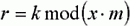
Formula (1)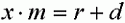
Formula (2)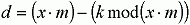
Formula (3)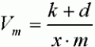
Formula (4)These formulas only apply if the number of match compare vectors is kept at a minimum by executing just enough match compare vectors to consume the bits produced by one loop of the circularly repeated production of k bits. This restriction leads to cross dependencies between k, d and the number of match compare vectors Vm which sometimes only can be fulfilled for certain combinations of these numbers, since all of these have to be integer numbers by their nature. One more degree of freedom is obtained with the more general formula for Vm according to (5) that introduces the integer number i as new parameter, which can be used to adapt the other numbers in a more flexible way.
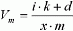
Formula (5)The idea behind (5) is to cover multiple loops of the production process within the match compare vectors and introduce a displacement that is shared among all the production loops that are executed within one match compare vector block. Thus, more relations between k, d, x and m can be covered.
The maximum number of executions of the match compare vector block is determined by the minimum displacement granularity g that is required to cover all possible timing relations between the producer and the consumer. This granularity usually is the same number as the selected displacement d. However, this is not a necessary requirement and there can be setups, where the granularity is not equal to the displacement d that has been selected. This is the case for example if a displacement d is selected that covers all possible alignment positions not sequentially, but jumps over several bits from alignment position to alignment position overall covering all possible alignment positions. Thus, the granularity also can be seen as a 'resulting displacement' that is determined by calculating the bit distances between all tested alignment positions. An example for such a setup is a bit sequence with the length k = 7 and an implemented displacement d = 3. For this parameter selection, the match compare vector executions check the alignment positions in the order 1, 4, 7, 3, 6, 2, 5. Obviously, this covers the alignment positions from 1 to 7 with a granularity g of 1 bit, although the implemented displacement d from one execution of the match compare vectors to the next execution of these vectors is not 1 bit. The optimum granularity that results in a minimum number of loop executions necessary to cover all possible alignment positions is determined by the nature of the DUT. For devices with word alignment, the optimum granularity is given by the word width of the data on the parallel side of the DUT. For devices without word alignment, the granularity has to be 1. The minimum number Rm of executions of the match compare vector block is given according to (6).
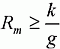
Formula (6)User vectors
The user vectors of our match loop implementation have to ensure that the bit-phase between the producer of the serial bits and the consumer is kept at the position that was valid, when the match compare vector block was left. This position always has a displacement of d bits between the produced and consumed bits compared to the previous execution of the match compare vectors. After the execution of the user vectors, the decision is taken to either enter the next execution of the match compare vectors (in case the previous match compare resulted in a FAIL), to execute the vectors after the user vectors (in case the match compare delivered a PASS) or to abort the execution of the label (if the match compare resulted in a FAIL and the maximum number of match loop executions is reached). In both cases that result in a subsequent execution of vectors, the first vector executed after the user vectors has the same relative position between the produced and consumed bits as the first of the user vectors if the user vectors are set up correctly. Thus, the user vectors behave like a transparent vector part that has no effect on the displacement between the produced and consumed bits. The only purpose of the user vectors is to allow the test system to bridge the time that is needed to evaluate the result of the functional test of the previous execution of the match compare vectors and to branch accordingly to either the next execution of the match compare vectors or to continue with the linear vector flow after the user vectors.
In order to implement such a transparent vector block, it is essential to control the number of vectors generated as user vectors. The bit phase between the producer and the consumer of the bit stream can be kept if an integer multiple of the circularly repeated bit stream is produced and consumed during the user vector block of the match loop. Thus, the number of user vectors Vu can be determined according to (7).
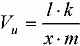
Formula (7)The vector block of this length is repeated until a PASS/FAIL decision for the match compare vectors can be taken. Since each run through the user vector block keeps the bit phase between the bit stream producer and consumer, it is neglectable from an application point of view, how often this vector block is repeated.
Fill vectors
The fill vectors are executed once a match between the free running bit stream and the match compare vectors was identified. Since the execution of the match compare vectors introduced a displacement d between the producer of the bit stream and the test system and this displacement is kept at this value during the execution of the user vectors, the vectors for the functional tests following the user vectors would have to take this displacement into account. The purpose of the fill vectors is to reset the bit phase relationship between the producer and consumer to the phase that was valid when the match compare vectors were entered. This makes it easier to set up the vectors for the functional test after the match loop, since after the execution of the fill vectors, the match compare vectors just can be copied without any bit phase shift to do the subsequent functional tests in a conventional loop if this is required to achieve a certain bit error rate.
This bit phase reset is achieved by consuming d bits less than necessary to keep the bit phase at the value it was when the fill vectors were entered. Since the consumption of an integer multiple of k bits keeps the bit phase the consumption of d bits less than this integer multiple gives the necessary bit phase shift back to the phase that was valid before the displacement of d bits was introduced. Thus, the number of fill vectors Vf required can be calculated according to (8).
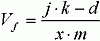
Formula (8)The search for a valid combination of the values in this formula can be simplified by selecting the value j dependent on the value l and i from (7) and (5) as given in (9).
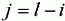
Formula (9)This leads to (10) and thus to an easy calculation of Vf based on the previous calculations.
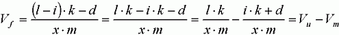
Formula (10)
Example: SONET DEVICE 4bit x4-mode
This example covers a SONET device which converts a 2.488 Gbps data stream into four parallel data streams of 622 Mbps data rate. The device does not support word alignment. Given these characteristics, it is obvious that x4 mode has to be used to reach the datarate of the parallel DUT outputs. The DUT requires a bit time of 400 ps which is substantially smaller than the minimum cycle time of 4ns divided by the DUT word width of 4. Thus, according to Table 1 we have to use a match loop construct as it was described above with a distance of 1 between the single executions of the match compare vectors. Given the x-mode that has to be used, the word width and the required distance of 1, a circularly repeated bit stream of 127 bit length is selected for this test. This selection is supported by the fact that for this kind of devices very often bit sequences of the length 2n-1 like for the example PRBS sequences of this length are used. Thus the following parameters are known:
- κ = 4
- k = 127
- m = 4
- d = 1
- g = 1
If these parameters are applied to (4) the number Vm of match compare vectors is 8. The minimum repeat factor Rm for the match compare vectors becomes 127 according to (6). The number of user vectors Vu is calculated using (7). The minimum value for this number in our case is achieved by selecting l equal to the product of x and m. This ensures, that the result of (7) becomes an integer number which is necessary for vector numbers. The calculated result for Vu according to these thoughts is 127. Figure 7 shows the match compare section and the start of the user vectors for this example device. The match compare vectors start at vector 8 and extend up to vector 15. The user vectors start at vector number 16 and consist of a block of 127 vectors. Figure 8 shows the end of the user vectors at vector number 142 and the beginning of the fill vectors at vector number 143.
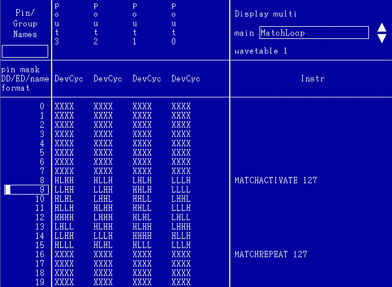
Figure (8) Match compare vectors and start of user vectors for SONET device example
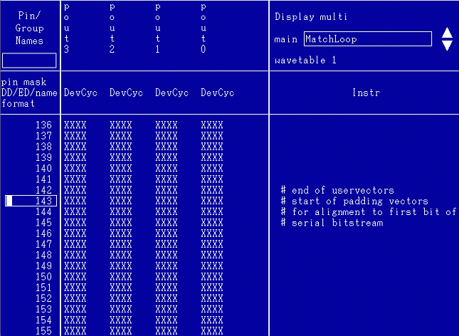
Figure (9) End of user vectors and start of fill vectors for SONET device example
The number of fill vectors Vf according to (10) is calculated to a value of 119. The end of the fill vector section is shown in Figure 9. The vectors that do the comparison to the circularly repeated bit stream the test system is synchronized to now starts at vector 143+119=262. For the compare part of this screenshot from vector 262 on, it easily can be recognized, that the data that is compared to is exactly the same that is used in the match compare vectors also. This exact alignment is the result of the fill vectors used in our example.
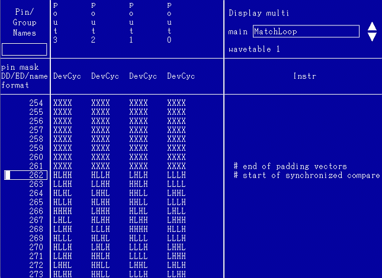
Figure (10) End of fill vectors and start of compare vectors for SONET device example